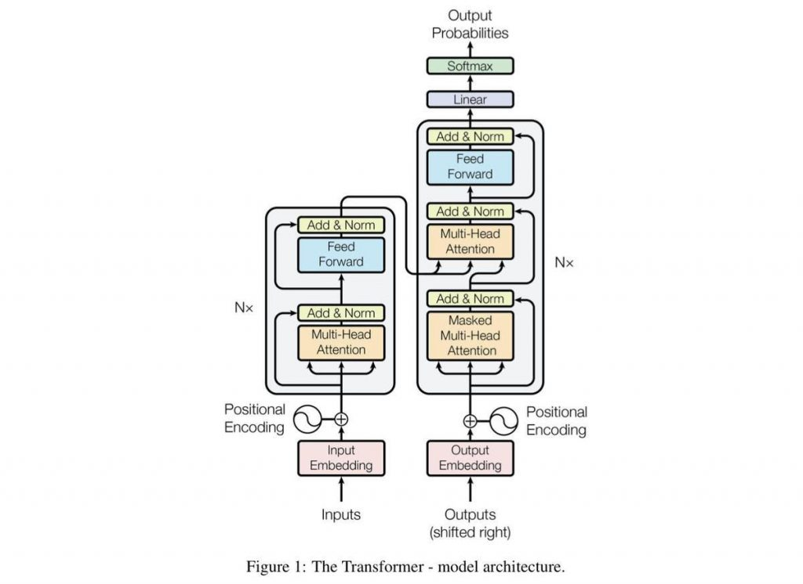

|
Harrison Bounds
Current Northwestern MS
Robotics
student with a graduation date of December 2025.
Received my BS in Computer Science from the University of
Central
Arkansas in 2023.
|
Projects |

|
RLROBO
Harrison Bounds GitHub Developed a VLM finetuning pipeline using modified a GRPO reinforcement learning architecture to train and deploy basic manipulation policies for a Franka Panda robotic arm, spanning simulation and hardware. |
|
|
Bimanual Manipulation
Challenge
(1st place at ICRA)
Weize Li, Zhengxiao Han, Lixin Xu, Harrison Bounds, Chenrui Zhang, Yifan Xu Paper Teleoperated and trained a ARX humanoid robot to perform three different tasks for with bimanual manipulation: Fold a table cloth, open a container, and pick and place an object. Policy was trained using ACT, and competition was organized by Google Deepmind, RAI Institute, and other leading partners. |

|
Hexapod from
Scratch with RL
Harrison Bounds GitHub Designed, constructed, and trained a locomotion policy for a six-legged robot to compare learned gaits to traditional ones. Programmed a tripod gait with inverse kinematics and bezier curves, while the reinforcement learning used PPO (Proximal Policy Optimization) and the Genesis Simulation platform. |

|
Doodle Droid
(Reposted by Franka Robotics)
Yanni Kechriotis, David Matthews, Harrison Bounds, Zhengxiao Han, Christian Tongate GitHub A 7-DoF Franka robot arm that adjusts its z-height using AprilTags, detects faces with an external camera, and generates portraits via line art. My core contribution involved leading the perception subsystem, utilizing ROS2, OpenCV, and Python to convert source images into detailed line drawings. |
|
Teaching an Old Dog New Tricks
Harrison Bounds, Sharwin Patil, Pushkar Dave GitHub Trained a Unitree Go2 robot dog in Genesis to perform diverse locomotion tasks, including walking, running, jumping, strafing, and stair climbing. Each specialized policy was developed using Proximal Policy Optimization (PPO) with task-specific reward functions. |
|
|  |
GPT-2 From Scratch
Harrison Bounds, *adapted from Andrej Karpathy, GitHub Created GPT-2's transformer from scratch adapting the source code from Andrej Karpathy's tutorials. Trained on 2 A6000 RTX GPUs with a total training time of 4 days. Evaluated results on hellaswag data retrieving an accuracy that beat the original model. |
|
Modern Grasping
Zhengxiao Han, Harrison Bounds GitHub Integrated a VLM (Vision-Lanugage Model) with SAM (Segment-Anything Model) to detect and mask arbitrary objects in a scene. This mask is overlayed onto the point cloud provided by a realsense RGBD camera and filters out grasping poses calculated from GraspNet. |
|

|
Autonomous RC Car
Harrison Bounds, Brandon Donaldson, Lawan Hamidou, Lin Zhang GitHub Autonomous navigation system for an RC car using imitation learning built on a custom CNN (convolutional neural network). |
|
Interactive Path
Planning
Harrison Bounds, Logan Boswell GitHub Interactive path planning tool for navigating occupancy grids created by SLAM algorithms. Implemented the A* algorithm in C++ and integrated it with ROS2, allowing users to define start and goal points and visualize optimal paths in a simulated environment. |
|
|
K-Means
Research
Harrison Bounds, Emre Celebi, Jordan Maxwell GitHub Implemented the Jancey K-Means algorithm in C++, comparing this lesser-known variant of K-Means to other popular widely used algorithms for clustering applications. |
|
|
Sketch Prediction
Harrison Bounds, Sharwin Patil, Andrew Kwolek, Sayantani Bhattacharya GitHub Custom CNN (Convolutional Neural Network) that predicts a live drawing from a user over 250 unique classes. |
|

|
Mobile
Manipulation
Harrison Bounds GitHub Simulated a mobile Kuka robot in Coppelia Sim performing a manipulation task with a 4 DoF arm attached. Utilized trajectroy generation and PID control for smooth planning. |
|
2D Physics
Simulator from
Scratch
Harrison Bounds GitHub Simulated a jack in the box using Langragian dynamics and impact equations with Python and sympy. |
|
Website template from Jon Barron. |